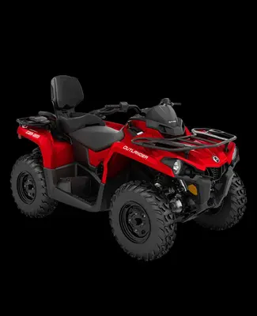

Tour a Las Coloradas en cuatrimoto Can-Am o tubular RZR | Explora El Cuyo Tours
Explora los caminos y paisajes de Las Coloradas desde El Cuyo en cuatrimoto Can-Am Outlander o tubular RZR. Recorridos aproximados de 5 horas.

Recorrido terrestre hacia Las Coloradas
Disfruta una ruta de aventura por caminos de arena, playas y paisajes naturales rumbo a Las Coloradas. El recorrido puede incluir paradas en la ría, una playa virgen, el punto estrecho entre laguna y mar, el puerto y las charcas rosas, y una playa de regreso, según las condiciones del día.
Elige tu vehículo
Can-Am Outlander: $3,650 MXN por vehículo, con capacidad para dos personas.
Tubular tipo RZR: $1,500 MXN por persona para grupos de 1 a 3; $1,200 MXN por persona para grupos de 4 a 8. La capacidad final depende del vehículo disponible.
Qué incluye
- Botellas de agua purificada.
Qué no incluye o debes considerar
- Frutas del día no incluidas en estos recorridos terrestres.
- Entrada al parque turístico de Las Coloradas, si se visita; se paga por separado.
- Servicios o consumos no mencionados.
Los horarios y tiempos de recorrido son aproximados cuando así se indica y pueden cambiar por clima, navegación, condiciones naturales y operación del proveedor. Confirma los detalles y disponibilidad antes de reservar.
Consultar disponibilidad por WhatsApp Volver a Explora El Cuyo Tours